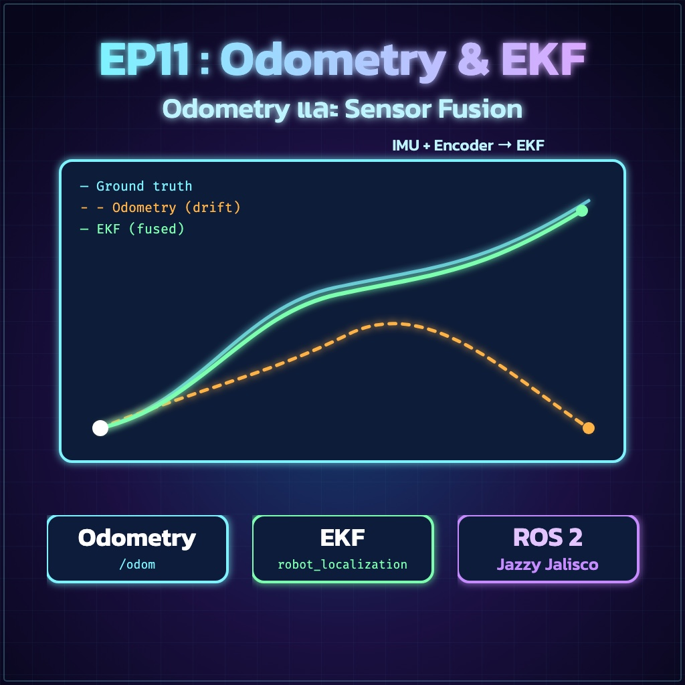
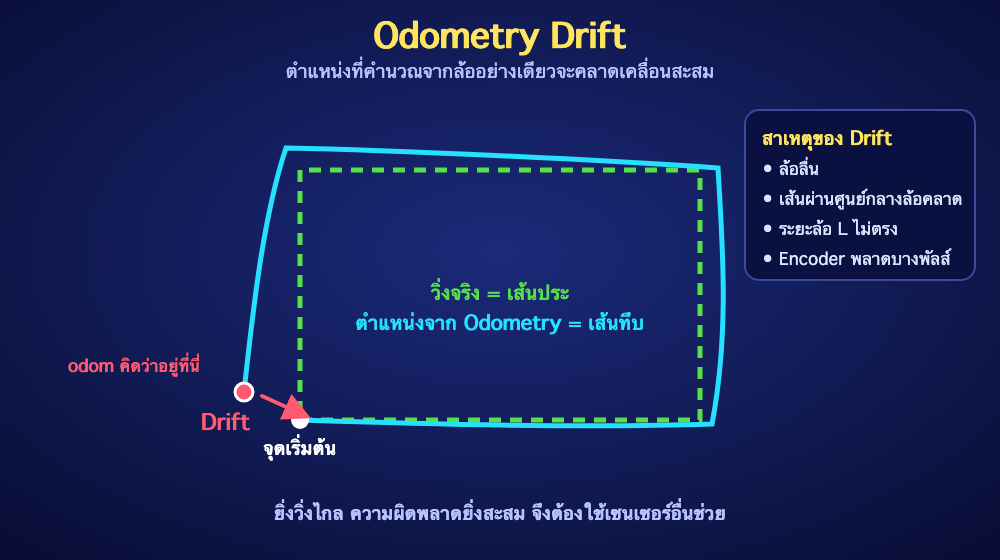
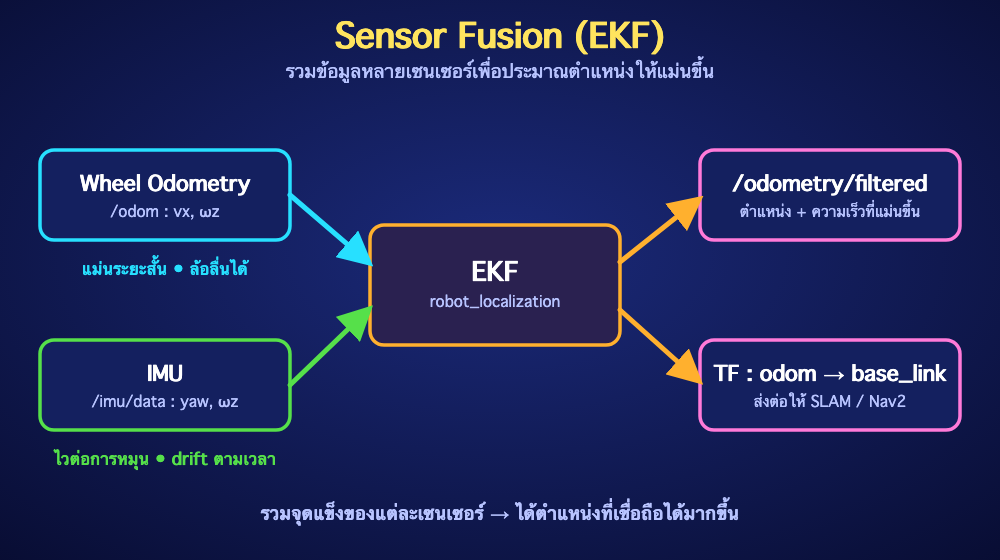

ย้อนกลับ

EP11
Odometry และ Sensor Fusion (EKF)
"รู้ว่าหุ่นยนต์ไปไหนมา จากการหมุนของล้อและเซนเซอร์ IMU"
🎯 จุดประสงค์การเรียนรู้
- อธิบายว่า Odometry คืออะไรและทำไมถึงเกิด Drift
- คำนวณตำแหน่ง (x, y, θ) จากจำนวน Tick ของล้อซ้าย-ขวาได้
- เขียน ROS 2 Node ที่ส่ง
nav_msgs/Odometry และ TF odom → base_link
- ใช้
robot_localization (EKF) รวมข้อมูล Wheel Odometry กับ IMU ได้
1. Odometry คืออะไร?
Odometry คือการ "นับก้าว" ของหุ่นยนต์ — ใช้จำนวนรอบที่ล้อหมุน (จาก Encoder ใน EP7–EP8) คำนวณย้อนกลับว่าหุ่นยนต์ขยับไปไกลแค่ไหนและหันไปทางไหน เทียบได้กับการเดินนับก้าวโดยหลับตา เริ่มจากจุดที่รู้ตำแหน่งแน่นอน แล้วบวกระยะที่เดินเพิ่มไปเรื่อยๆ วิธีนี้เรียกว่า Dead Reckoning
Odometry บอก "ตำแหน่งสัมพัทธ์ ณ จุดเริ่มต้น" ใน Frame odom เท่านั้น ไม่ใช่ตำแหน่งจริงในห้อง

⚠️ ข้อจำกัด: ความผิดพลาดเล็กน้อยทุกครั้งที่คำนวณจะสะสมไปเรื่อยๆ ล้อลื่นหรือวัดรัศมีล้อคลาดแค่ 1–2 มม. ก็ทำให้ตำแหน่งเพี้ยนได้มากเมื่อวิ่งไกล
2. สมการ Odometry สำหรับ Differential Drive
ในแต่ละรอบการคำนวณ ให้หาระยะที่ล้อแต่ละข้างเคลื่อนที่ก่อน จากนั้นแปลงเป็นระยะเดินหน้าและมุมหมุนของตัวหุ่นยนต์:
- $r$ = รัศมีล้อ (เมตร), $N$ = จำนวน Tick ต่อรอบล้อ, $L$ = ระยะห่างล้อซ้าย-ขวา (Track Width จาก EP10)
- ใช้ $\theta + \Delta\theta/2$ (มุมกึ่งกลาง) เพื่อให้แม่นกว่าใช้มุมเดิมอย่างเดียว
3. ROS 2 สื่อสาร Odometry อย่างไร?
| สิ่งที่ส่ง | ชนิด | รายละเอียด |
|---|
/odom | nav_msgs/msg/Odometry | pose (x, y, yaw) และ twist (ความเร็ว) พร้อม Covariance |
TF | odom → base_link | บอกว่า base_link อยู่ตรงไหนเมื่อเทียบกับ odom (จาก EP9) |
Frame odom จะต่อเนื่องเสมอ (ไม่กระโดด) แต่เพี้ยนสะสมได้ ส่วน Frame map (EP13) จะแก้ความเพี้ยนนั้นให้ภายหลัง
4. เขียน Wheel Odometry Node
mkdir -p ~/ros2_ws/src
cd ~/ros2_ws/src
ros2 pkg create --build-type ament_python brobot_odom \
--dependencies rclpy nav_msgs geometry_msgs std_msgs tf2_ros
สร้างไฟล์ ~/ros2_ws/src/brobot_odom/brobot_odom/wheel_odometry.py — Node นี้รับค่า Tick จาก Topic /wheel_encoder_ticks ของ EP7 (ข้อมูลเป็น [left, right])
import math
import rclpy
from rclpy.node import Node
from geometry_msgs.msg import TransformStamped
from nav_msgs.msg import Odometry
from std_msgs.msg import Int32MultiArray
from tf2_ros import TransformBroadcaster
class WheelOdometry(Node):
def __init__(self):
super().__init__('wheel_odometry')
self.declare_parameter('wheel_radius', 0.033) # เมตร
self.declare_parameter('track_width', 0.16) # เมตร ระยะห่างล้อซ้าย-ขวา
self.declare_parameter('ticks_per_rev', 600.0) # ต้องตรงกับ Encoder จริง
self.declare_parameter('publish_tf', True)
self.radius = self.get_parameter('wheel_radius').value
self.track = self.get_parameter('track_width').value
self.ticks_per_rev = self.get_parameter('ticks_per_rev').value
self.publish_tf = self.get_parameter('publish_tf').value
self.x = 0.0
self.y = 0.0
self.theta = 0.0
self.prev_ticks = None
self.prev_time = None
self.odom_pub = self.create_publisher(Odometry, 'odom', 10)
self.tf_broadcaster = TransformBroadcaster(self)
self.create_subscription(
Int32MultiArray, 'wheel_encoder_ticks', self.on_ticks, 10)
self.get_logger().info('Wheel odometry started')
@staticmethod
def wrap_delta(delta):
# รองรับกรณีค่า tick เป็น int16 ที่วนกลับ (-32768..32767)
return (delta + 32768) % 65536 - 32768
def on_ticks(self, msg):
if len(msg.data) < 2:
return
left, right = msg.data[0], msg.data[1]
now = self.get_clock().now()
if self.prev_ticks is None:
self.prev_ticks = (left, right)
self.prev_time = now
return
delta_left = self.wrap_delta(left - self.prev_ticks[0])
delta_right = self.wrap_delta(right - self.prev_ticks[1])
dt = (now - self.prev_time).nanoseconds * 1e-9
self.prev_ticks = (left, right)
self.prev_time = now
if dt <= 0.0:
return
meters_per_tick = 2.0 * math.pi * self.radius / self.ticks_per_rev
dist_left = delta_left * meters_per_tick
dist_right = delta_right * meters_per_tick
dist = (dist_left + dist_right) / 2.0
d_theta = (dist_right - dist_left) / self.track
self.x += dist * math.cos(self.theta + d_theta / 2.0)
self.y += dist * math.sin(self.theta + d_theta / 2.0)
self.theta += d_theta
self.publish(now, dist / dt, d_theta / dt)
def publish(self, now, linear, angular):
qz = math.sin(self.theta / 2.0)
qw = math.cos(self.theta / 2.0)
stamp = now.to_msg()
odom = Odometry()
odom.header.stamp = stamp
odom.header.frame_id = 'odom'
odom.child_frame_id = 'base_link'
odom.pose.pose.position.x = self.x
odom.pose.pose.position.y = self.y
odom.pose.pose.orientation.z = qz
odom.pose.pose.orientation.w = qw
odom.twist.twist.linear.x = linear
odom.twist.twist.angular.z = angular
# ค่า Covariance ไม่ควรเป็นศูนย์ทั้งหมด เพราะ EKF ใช้ถ่วงน้ำหนักข้อมูล
odom.pose.covariance[0] = 0.01
odom.pose.covariance[7] = 0.01
odom.pose.covariance[35] = 0.03
odom.twist.covariance[0] = 0.01
odom.twist.covariance[35] = 0.03
self.odom_pub.publish(odom)
if self.publish_tf:
tf = TransformStamped()
tf.header.stamp = stamp
tf.header.frame_id = 'odom'
tf.child_frame_id = 'base_link'
tf.transform.translation.x = self.x
tf.transform.translation.y = self.y
tf.transform.rotation.z = qz
tf.transform.rotation.w = qw
self.tf_broadcaster.sendTransform(tf)
def main(args=None):
rclpy.init(args=args)
node = WheelOdometry()
try:
rclpy.spin(node)
except KeyboardInterrupt:
pass
finally:
node.destroy_node()
if rclpy.ok():
rclpy.shutdown()
if __name__ == '__main__':
main()
สมมติฐานของโค้ด: ค่าใน /wheel_encoder_ticks เป็นจำนวน Tick สะสม ของแต่ละล้อ (ไม่ใช่ความเร็ว) และตั้งค่า wheel_radius, track_width, ticks_per_rev ให้ตรงกับหุ่นยนต์จริงผ่าน --ros-args -p
5. ลงทะเบียนและ Build
แก้ setup.py:
entry_points={
'console_scripts': [
'wheel_odometry = brobot_odom.wheel_odometry:main',
],
},
cd ~/ros2_ws
colcon build --symlink-install --packages-select brobot_odom
source install/setup.bash
ros2 run brobot_odom wheel_odometry --ros-args \
-p wheel_radius:=0.033 -p track_width:=0.16 -p ticks_per_rev:=600.0
6. ตรวจผล
# Terminal ใหม่
source /opt/ros/jazzy/setup.bash
source ~/ros2_ws/install/setup.bash
ros2 topic echo /odom --once
ros2 topic hz /odom
ros2 run tf2_ros tf2_echo odom base_link
✅ Expected Result: เมื่อหมุนล้อไปข้างหน้าด้วยมือ ค่า position.x เพิ่มขึ้น หมุนล้อขวาอย่างเดียวแล้ว orientation.z เปลี่ยนไปทางซ้าย และ tf2_echo แสดงค่าตรงกับ /odom
7. รวมข้อมูลด้วย EKF (robot_localization)
Wheel Odometry แม่นระยะสั้นแต่ล้อลื่นได้ ส่วน IMU (เซนเซอร์วัดการหมุน) ไวต่อการเปลี่ยนทิศแต่ค่า Drift ตามเวลา EKF (Extended Kalman Filter) จะรวมสองแหล่งเข้าด้วยกัน โดยถ่วงน้ำหนักตามความน่าเชื่อถือ (Covariance) ของแต่ละค่า

sudo apt install -y ros-jazzy-robot-localization
สร้างไฟล์ ~/ros2_ws/src/brobot_odom/config/ekf.yaml:
ekf_filter_node:
ros__parameters:
frequency: 30.0
two_d_mode: true
publish_tf: true
map_frame: map
odom_frame: odom
base_link_frame: base_link
world_frame: odom
# ลำดับ 15 ค่า: x, y, z, roll, pitch, yaw, vx, vy, vz, vroll, vpitch, vyaw, ax, ay, az
odom0: /odom
odom0_config: [false, false, false,
false, false, false,
true, false, false,
false, false, true,
false, false, false]
odom0_differential: false
imu0: /imu/data
imu0_config: [false, false, false,
false, false, true,
false, false, false,
false, false, true,
false, false, false]
imu0_differential: false
อ่าน _config อย่างไร? เป็นรายการ true/false 15 ค่า เรียงตาม x, y, z, roll, pitch, yaw, vx, vy, vz, vroll, vpitch, vyaw, ax, ay, az ตัวอย่างนี้ใช้ ความเร็วเดินหน้า (vx) และความเร็วหมุน (vyaw) จากล้อ กับ yaw และ vyaw จาก IMU ถ้ายังไม่มี IMU ให้ลบกลุ่ม imu0 ออก
8. Launch และตรวจผลการรวมข้อมูล
สร้างไฟล์ ~/ros2_ws/src/brobot_odom/launch/ekf.launch.py:
import os
from ament_index_python.packages import get_package_share_directory
from launch import LaunchDescription
from launch_ros.actions import Node
def generate_launch_description():
config = os.path.join(
get_package_share_directory('brobot_odom'), 'config', 'ekf.yaml')
return LaunchDescription([
Node(
package='brobot_odom',
executable='wheel_odometry',
name='wheel_odometry',
parameters=[{'publish_tf': False}], # ให้ EKF เป็นผู้ส่ง TF แทน
),
Node(
package='robot_localization',
executable='ekf_node',
name='ekf_filter_node',
output='screen',
parameters=[config],
),
])
แก้ setup.py ให้ติดตั้งโฟลเดอร์ launch และ config (หลักการเดียวกับ EP6):
import os
from glob import glob
# ในลิสต์ data_files=[ ... ] ให้เพิ่ม 2 บรรทัดนี้
(os.path.join('share', package_name, 'launch'), glob('launch/*.launch.py')),
(os.path.join('share', package_name, 'config'), glob('config/*.yaml')),
cd ~/ros2_ws
colcon build --symlink-install --packages-select brobot_odom
source install/setup.bash
ros2 launch brobot_odom ekf.launch.py
# Terminal ใหม่
ros2 topic echo /odometry/filtered --once
ros2 run tf2_ros tf2_echo odom base_link
⚠️ ผู้ส่ง TF ต้องมีคนเดียว: เมื่อใช้ EKF ต้องตั้ง publish_tf: False ให้ Wheel Odometry Node (ดังในไฟล์ Launch ด้านบน) ไม่เช่นนั้นจะมีสอง Node แย่งส่ง odom → base_link แล้วหุ่นยนต์ใน RViz2 จะกระตุก
✅ Expected Result: ได้ Topic /odometry/filtered และ TF odom → base_link ต่อเนื่อง และเมื่อหมุนหุ่นยนต์ในที่ ค่า yaw ไม่เพี้ยนตามล้อลื่น
🧪 LAB 11.1 — วิ่งตรง 2 เมตร
- ยกล้อพ้นพื้นก่อนทดสอบครั้งแรก แล้วค่อยวางหุ่นยนต์บนพื้น
- ทำเครื่องหมายจุดเริ่มต้น ขับหุ่นยนต์ตรงไป 2.0 เมตร (วัดด้วยตลับเมตร)
- อ่าน
position.x จาก /odom แล้วคำนวณ error (%)
- ถ้า error เกิน 5% ให้ปรับ
wheel_radius แล้วทดสอบใหม่
เกณฑ์ผ่าน: ระยะจาก Odometry ต่างจากระยะจริงไม่เกิน 5%
🧪 LAB 11.2 — หมุนครบรอบ
- หมุนหุ่นยนต์รอบตัวเองครบ 1 รอบ (360°) ด้วยมือหรือด้วยคำสั่งความเร็วต่ำ
- ดูค่า yaw ใน RViz2 (Add → Odometry หรือ TF)
- ปรับ
track_width จนหมุนครบรอบแล้วหันกลับมาทิศเดิม
เกณฑ์ผ่าน: หมุนครบรอบแล้ว yaw คลาดเคลื่อนไม่เกิน 10°
⚠️ Common Problems
| อาการ | แนวทางแก้ |
|---|
| วิ่งไปข้างหน้าแต่ x ลดลง | ทิศ Encoder กลับ ให้สลับเครื่องหมาย Tick หรือสลับสาย A/B |
| วิ่งตรงแต่เส้นทางโค้ง | ล้อซ้าย-ขวามี ticks_per_rev หรือรัศมีไม่เท่ากัน ให้ตรวจและวัดใหม่ |
| หมุนในที่แล้ว yaw ไม่ครบ | ปรับ track_width ให้ตรงกับระยะล้อจริง |
| ตำแหน่งกระโดดหรือกระตุก | มีสอง Node ส่ง TF odom → base_link ให้ปิดตัวหนึ่ง |
| EKF ไม่ส่งข้อมูล | ตรวจชื่อ Topic ใน ekf.yaml, stamp ของข้อความ และ Covariance ไม่เป็นศูนย์ทั้งหมด |
| ค่า Tick เพี้ยนตอนกลับด้าน | ค่า int16 วนรอบที่ ±32768 โค้ดใช้ wrap_delta จัดการแล้ว ตรวจว่าไม่ได้ลบทิ้ง |